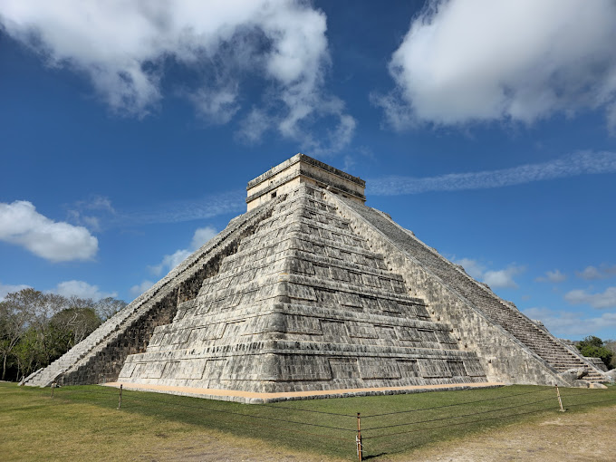
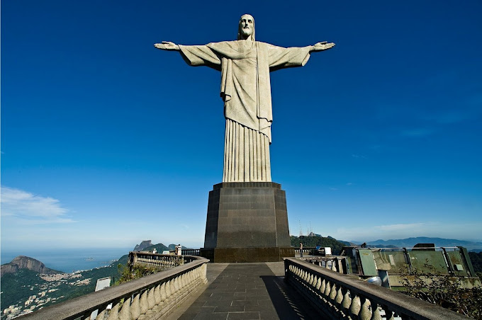
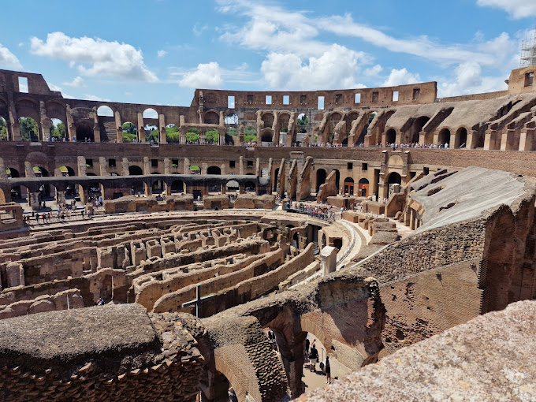
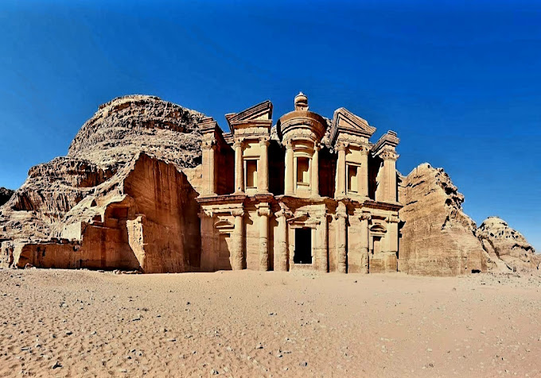
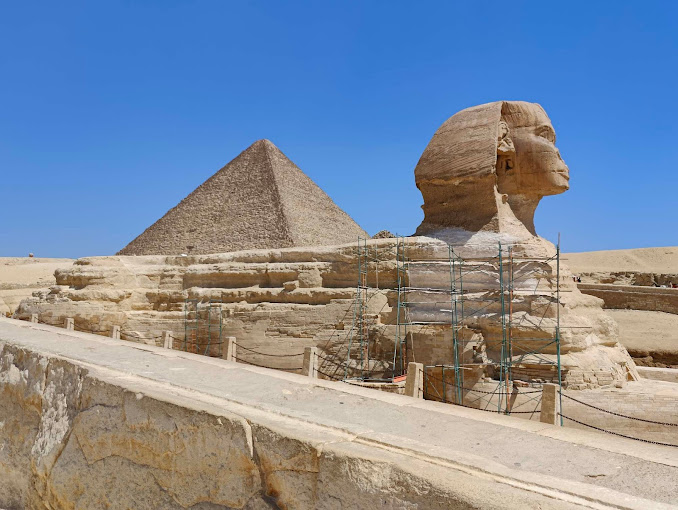
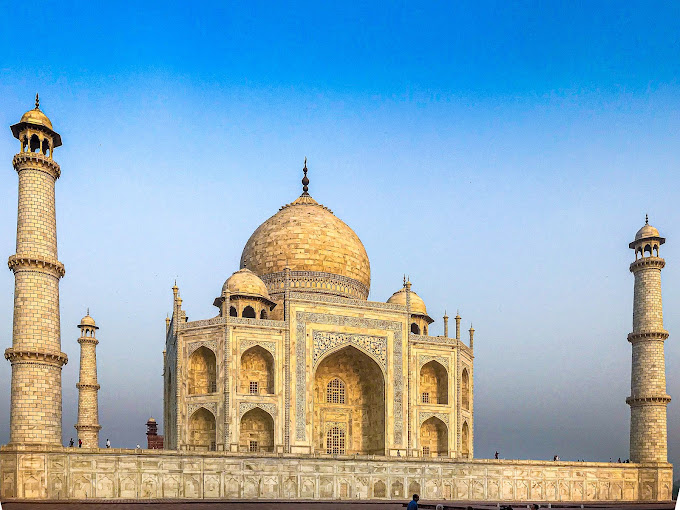

UNIT: ICS 3108 - SOFTWARE PROJECT MANAGEMENT
1. BOAZ CHERUIYOT - SCT313-1979/2023
2. BETT VICTOR - SCT313-2328/2023
|
|
|||||||
|
Machu
|
Chichen  | Christ  | Colosseum  | Wall | Petra  | Pyramid  | Taj  |